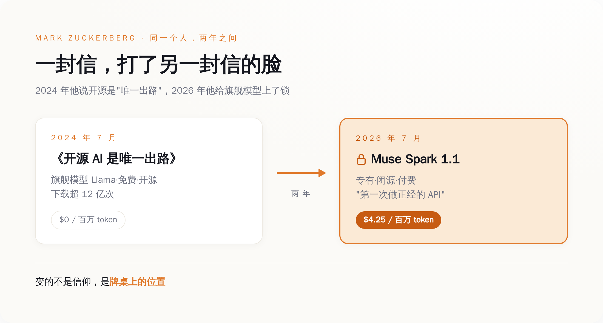
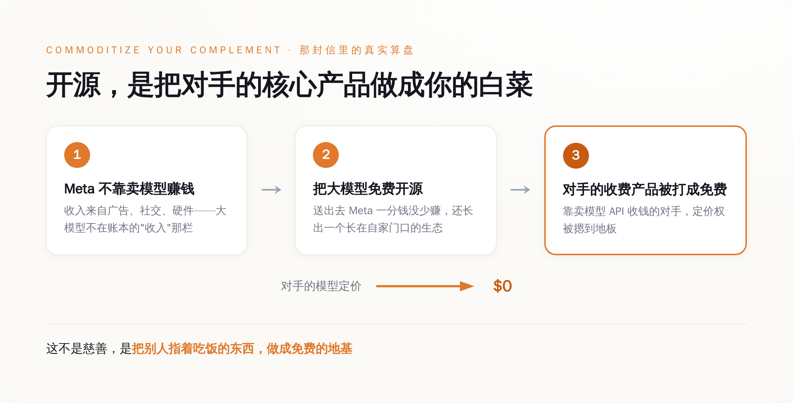
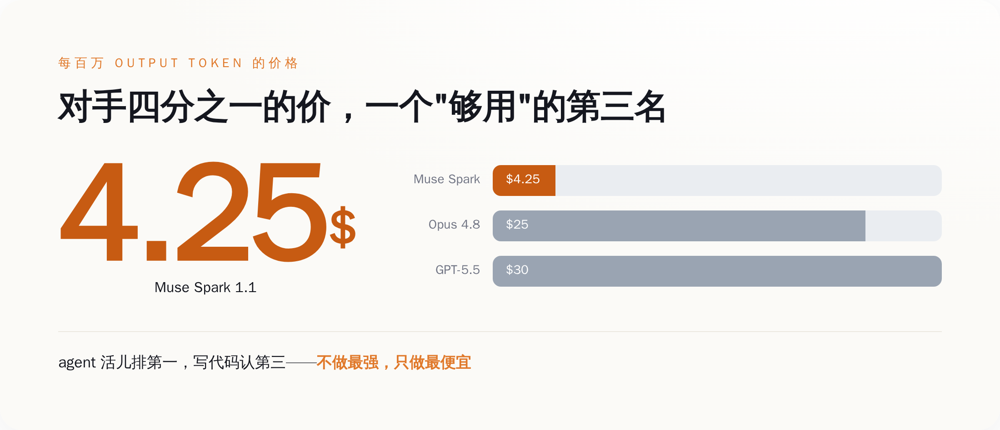

一、他给这事，亲手盖了个戳
先把发布这天的事说清楚。

Muse Spark 1.1 是 Meta 超级智能实验室（Meta Superintelligence Labs）交出的东西，挂帅的是 Alexandr Wang——扎克伯格去年花了约 143 亿美元投资 Scale AI，顺手把这个人请来当了首席 AI 官。模型本身规格不小：专有闭源，一百万 token 的上下文窗口，主打 agent 编排、工具调用、写代码这类"能干活"的场景。定价是这样的——每百万输入 token 1.25 美元，每百万输出 token 4.25 美元，缓存输入 0.15 美元，新注册的开发者送 20 美元额度试用。
这是一份很标准的商业模型发布。标准到，如果发布方换成别的任何一家公司，都不值得单写一篇。
值得写的是扎克伯格给它配的那句话。"real serious API"——正经的、认真的 API。你把这个措辞放到显微镜下看：serious，认真。言下之意再清楚不过——过去这些年他免费撒出去的那一整个 Llama 家族，是不认真的、闹着玩的、随手施舍的。
一家公司，把自己的模型免费发到全世界下载了十几亿次，然后老板转过身来告诉你：那些都不算"正经生意"，这次收钱的才算。
这话你挑不出错。它甚至相当诚实。它只是诚实得有点扎人——原来在他自己的账本里，"开源"这两个字，从来没进过"生意"那一栏。就这。
二、两年前那封信，其实早把话说明白了
要理解他今天为什么能这么坦然地翻脸，得回去读那封被无数人转发、被供成"开源信仰圣经"的信。
奇怪的地方在于：这封信里，一句信仰都没有。
通篇他掰扯的全是生意。他解释 Meta 为什么要把 Llama 开源，用了一个直到今天读起来都很冷的类比——原话是，"如果只有 Meta 一家在用 Llama，这个生态起不来，那我们的下场不会比那些闭源版本的 Unix 好到哪去"（"If we were the only company using Llama, this ecosystem wouldn't develop and we'd fare no better than the closed variants of Unix."）。
你品这句话。他担心的根本不是"人类的 AI 会不会民主化"，他担心的是自己会不会变成下一个被历史淘汰的私有 Unix。开源在这封信里，从头到尾是一个防止自己出局的战术。
那这个战术是怎么算账的？信里也讲了：Meta 不靠卖模型访问权赚钱。它靠的是上面那层——社交、广告、硬件。所以把"大模型"这一层免费发出去，Meta 一分钱本来该赚的都没少赚；而那些指着卖模型 API 收费的对手，得眼睁睁看着自己收费的东西被人做成了免费的地基。你收 30 美元一百万 token，我这儿 0 美元管够，你这生意还怎么做？

经济学里这套路子有个老名字，叫 commoditize your complement——把你的互补品做成白菜价。对 Meta 来说，"大模型"就是那棵别人指着卖钱、而它自己不靠它吃饭的白菜。开源，就是把这棵白菜免费堆到全世界门口，堆到没人愿意再为它单独付钱为止。
所以那封信没骗你。它甚至比后来所有转发它、把它读成理想主义宣言的人都清醒。它明明白白告诉你了：我开源不是因为爱你，是因为我不靠卖模型赚钱，送出去我不疼，还顺手能把靠卖模型的对手的价格，摁到地板上。
他没骗你——真正骗你的是标题。"唯一出路"这四个字，让你以为这是一条道德的路、一条为了全人类的路。不是的。那是 2024 年那个还没追上第一梯队的 Meta，在牌桌上唯一能出的那张牌。三、那今天为什么又收费了？因为他这次觉得能卖了
信仰没变，牌桌上的位置变了。
看 Muse Spark 1.1 这次交出的成绩，你就明白 Meta 底气从哪来。在 agent 和工具调用这类"能不能自己干活"的评测上，它是真第一——比如 MCP Atlas 工具调用拿到 88.1 分，压过了对手。但你把它拉到纯写代码的赛道上，它就露怯了，稳稳的第三名：Terminal-Bench 2.1 上它 80.0 分，Claude Opus 4.8 是 82.7，GPT-5.5 是 83.4，它两个都没打过。
所以这次媒体评价直接劈成两半：有的标题写"击败了 Claude 和 GPT"，有的标题写"扎克伯格烧钱烧出来的第一个模型，全面落后于对手"。两边都没说谎，它们只是各自挑了对自己叙事有利的那半张榜单。

真实的 Muse Spark 是什么？是一个不做最强、只做最便宜的"够用"的模型。价格是对手的四分之一——它 1.25/4.25，Claude Opus 4.8 是 5/25，GPT-5.5 是 5/30。一个在 agent 活儿上能排第一、写代码老老实实认第三、但只要你四分之一钱的模型。
这打法眼熟吗？这就是把 agent 这一层，也做成白菜——熟悉的配方，熟悉的味道（笑）。唯一的区别是：2024 年那棵白菜是免费送的，2026 年这棵，开始收四分之一的钱了。
开源是打不赢时的免费；等到你觉得打得赢了，免费就成了"少赚"。而且他现在特别需要"少赚"变成"多赚"。Meta 把 2026 年的资本开支指引，从 1150 亿–1350 亿美元一路上调到了 1250 亿–1450 亿美元。这是什么概念——2025 年全年 Meta 的资本开支是 722 亿美元，2026 年这个数字差不多是它的两倍，比 2024 和 2025 两年加起来还多。财报公布那天，盘后股价一度跌超 6%，因为华尔街开始追着问同一个问题：钱砸进这么多数据中心，回报在哪？
一年往 AI 里砸一千多亿的时候，董事会不会跟你聊"开源是唯一出路"，他们只问一句：钱呢？信仰是要恰饭的。于是那条"唯一出路"上，就长出了一个岔路口，岔路口立着块牌子，上面写着 4.25 美元。
四、更何况，这张开源牌本来也快打不动了
就算不缺钱，Meta 这时候收手，也是精算过的。因为它手里那张免费牌，正在贬值。
Llama 的下载量，一直是 Meta 挂在嘴边的开源勋章。它官方宣布 2025 年 3 月突破 10 亿次下载，一个多月后又更新到 12 亿次，逢人就讲"几千个开发者、几万个衍生模型、每月几十万次下载"。这套数字，它当"开源领导力"的证据用了整整两年。
问题是，2026 年 7 月，这顶帽子被人摘走了——阿里的 Qwen 下载量超过了 Llama，成了全世界下载量最高的开源模型。
开源这张牌为什么曾经好用？因为你的免费模型得是所有人的默认地基，生态才会长在你家门口，你才有资格谈"标准由我定"。可当"最受欢迎的开源模型"这个位置被 Qwen 拿走，Meta 手里这张免费牌就变得两头不是人了：它换不来一分钱，又不再是那个人人都得用的标准。
留着它，图啥？一个既不赚钱、又不再当霸主的开源战略，在财务报表上就是纯支出，是每季度都得跟股东解释的一笔糊涂账。所以闭源、收费、做便宜的第三名，不是什么背叛信仰的大事，它就是一次冷静的止损。
开源信仰的退潮，和这张牌不再好用，是同一件事的两个说法。五、所以别信厂商的"信仰"，信它的资产负债表
把这两年连起来看，结论其实特别朴素。
一家公司开不开源，从来不是一道价值观题，是一道算术题。变量只有两个：一，它靠什么赚钱；二，它手里的模型排第几。
第一个变量决定它开源要不要脸疼——如果它不靠卖模型吃饭（像 Meta 靠广告、像谷歌当年靠搜索），那它开源就是在砸别人的饭碗、顺手攒自己的生态，一点不疼。第二个变量决定它什么时候翻脸——模型排在后面，免费送出去，叫"建生态"；一旦追上来了、觉得能卖了，同一个免费动作就成了"白白少赚钱"，那就该收费了。
所以下次再有哪个大厂老板，站在台上跟你谈"我们开源是为了 AI 民主化、是为了全人类"，你不用跟他辩，你就默默去查这两个数。数一对上，他的"信仰"是真是假，一目了然。
说到底，扎克伯格反倒是这群人里最诚实的一个。他没在那两封信里藏着掖着——2024 年那封，他把 commoditize 的商业算盘打得清清楚楚，白纸黑字；2026 年这次，他一句"这不是开源模型，所以第一次正经做 API"，也把话说到底了。从头到尾把你带偏的，不是他，是我们自己——我们把一份写得明明白白的商业计划书，读成了一份理想主义宣言。
那封信的标题，到今天该改一个字了。
开源不是"唯一"出路。开源是打不赢时的那条路。打赢了，路口有个收费站，每过一百万 token，收你 4.25 美元。